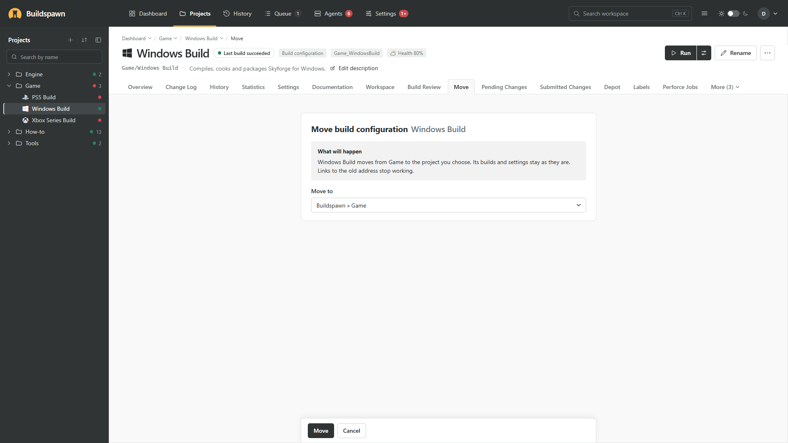

Rename, move and delete
Change where an item lives, what it is called, or remove it. Each action has its own page with a clear summary of what will happen.
Rename
- Open the item and click Rename in the page header.
- Type the New Name. The page says: the name and the address change, and links to the old address stop working.
- Click Rename.
The ID does not change. The item keeps its place in the tree order.
Move

- Open the item and click Move (a tab for a build configuration, or the ... menu for a project).
- Under Move to choose the project.
- Click Move. If the move can break something, the page lists it and offers Move anyway.
| Check | What it means |
|---|---|
| A build of it is running | Refused. Stop it or wait, then move. Nothing is changed. |
| The destination is archived | Refused. Nothing in an archived project can run. |
| A template is in use | Refused. Detach the build configurations first. |
| It uses a template the destination cannot reach | Refused. Detach the template first. |
| It loses inherited settings | Warning: steps and parameters inherited from the old project stop applying, including the parameters named on the page. |
| A dependency changes | Warning: the dependency leads to another build configuration, or none, after the move. |
A move keeps builds, settings, ID and history. Links to the old address stop working. Use the ID address /buildConfiguration/<id> for links that must survive a move.
Delete
- Open the item, open the ... menu and choose Delete.
- Read what will be removed. For a project, type its name to confirm.
- Click Delete.
Deleting removes the item, its builds and its settings. For a project it removes everything inside. This cannot be undone. A template that is in use is detached first: each build configuration keeps a copy of the template's settings, and the confirmation says how many. To take something out of use without losing it, archive it.
Problems and fixes
| Problem | What to do |
|---|---|
| Move says a build is running | Wait for it, or stop it. |
| I cannot delete a template | Delete detaches the build configurations. If you may not change one of them, nothing happens. Ask someone who may. |
| I need the old name back | Rename it again. The ID did not change. |